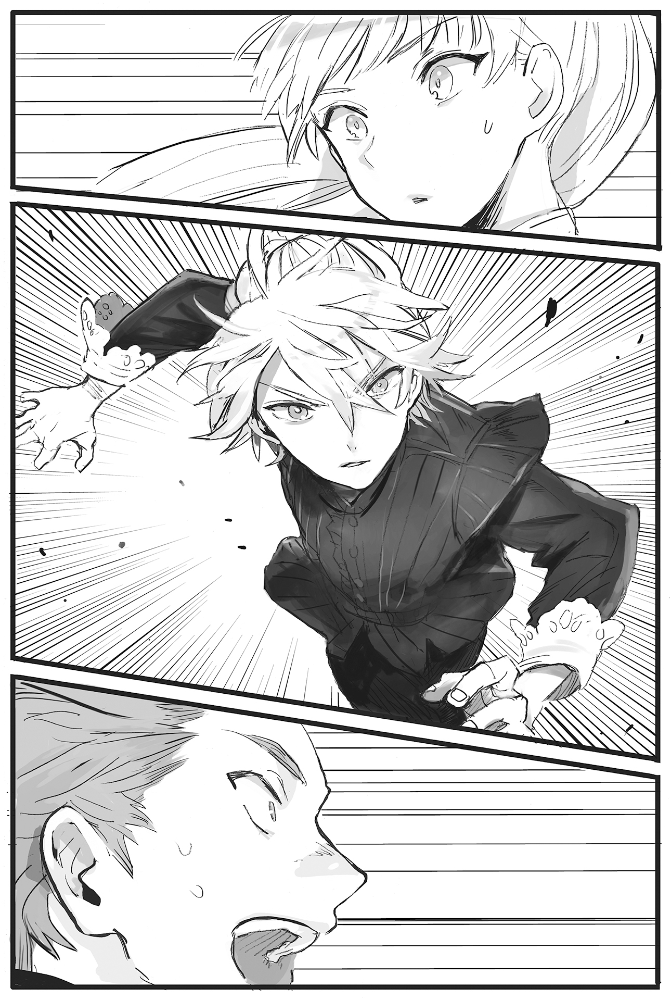
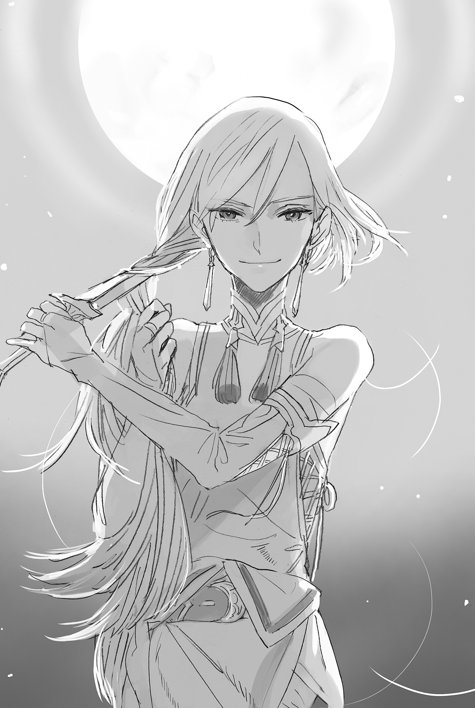

Chapter 1 – Knight Academy
.
Part 1
Baldr was heading straight toward the capital with his maid Seyruun via horse carriage. He had been enrolled into the royal knight academy.
When they left the forests in the territory of Count Cornelius, the Great Plain Marlborough(マールバラ) could be seen spreading as far as the eyes could see. These plains, with their very fertile soil, was famous for its plentiful grain production even throughout the continent.
Capturing this area was one of the main reasons why the neighboring Haurelia Kingdom wished to break through the Cornelius territory.
The four-field rotation system (Norfolk four-course system) still hadn’t been popularized in this country. However, using shells and leaf mold as fertilizer had already become common.
Also, breeding horses had been encouraged due to the long war prior, but in regards to livestock like cows and pigs, only the wealthy had them, and only to a moderate amount by relying on their abundant riches.
The Norfolk system produced fodder for the livestock while also securing the livestock themselves. It could be said that popularizing the practice of keeping livestock was a task for the future. However, Baldr had already started practicing the system at a small scale in the Cornelius territory, shouldering the expenses himself.
Although the Warring States general sleeping within Baldr, Oka Sanai, was a miser in regards to money, he had the principle of spending money without hesitation if it made him even more money.
.
After they passed the plains, Aleister Lake entered the eyes of Baldr and Seyruun. It was so large that they couldn’t even see the shore on the opposite side of the lake.
「Amazing-! Young master, there are waves even though it’s just a lake!」
「The lake in Cornelius is more like a marsh rather than a lake, after all……」
The Inawashiro Lake in Sanai’s memory was also just as big, so Baldr wasn’t feeling that moved. However, the sight was extremely novel and shocking for Seyruun, who had never left her birthplace.
Normally, she’d act like a composed big sister and not show this kind of excitement. Baldr stared at her fondly, thinking that she looked adorable right now.
Perhaps men would always be weak against gap moe no matter the world.
This lake had never gone dry since the founding of the country. The Amrita River that extends from this lake was a source of abundant water for the plains.
Mauricia Kingdom became a fertile country exactly because of the existence of this source of water.
At the same time, this Aleister Lake and Amrita River were the last defensive line that protected the capital. There would be no more obstacles if this place was broken through.
In that sense, there was no doubt that Cornelius territory would continue to be a strategic military position even far into the future.
.
The two of them continued to be jolted inside the carriage for ten days before they could finally see a gigantic rampart in the horizon.
The distance could be traveled in three days if one rode a fast horse without caring at all about its health, but it would take this long no matter how much they hurried if they took a carriage with two horses like this.
Baldr practically had no chance to leave the mansion in the past due to the impairment caused by his past memories. This would be his first experience visiting the capital.
The large structure that couldn’t possibly be found at Cornelius stimulated Baldr’s chuuni heart.
「Amazing-! So this is the royal capital Cameron(キャメロン)……!」
The gigantic rampart fully enclosed the castle town. In addition, there was the water that was drawn from O’Neill River that filled the moat protecting its outer wall.
This kind of castle with water surrounding it could also be seen in Japan during the Warring States era. For example, the Hitachiota Castle or Tsuchiura Castle comes to mind.
However, the size of the castle here was at a scale that Baldr had never seen before. Even Sanai, who knew about Osaka Castle and Aizu Kurokawa Castle, had never seen anything like this.
And then on this Aurelia Continent, no, the entire world, Cameron was the only capital that could be described as ‘floating on the water’.
Since the founding of the country, Mauricia Kingdom had allowed an enemy invasion to reach their capital three times, but all three times the enemy would be completely helpless before this impregnable defense and forced into a retreat.
The invulnerable city above the water──Baldr only knew about this place from books, but right now it was right in front of his eyes.
Even with all the memories of his past lives in his head, Baldr was still a twelve years old boy.
Baldr unconsciously stood still with sparkling eyes because of his excitement. Seyruun didn’t say anything to him and only chuckled while thinking,
That vixen Selina ── she must have never seen the young master looking like this.
.
The royal knight academy was originally managed by the military minister in order to train the knights of the royal knight order. It was an educational institution that was founded by the king two generations prior.
However, before they knew it, the ideal of the academy’s establishment came apart at its seams. A bipolarization appeared among its students ── the nobles who enrolled just to obtain some prestige and planned on returning to their territory after graduation, and those who truly aimed to become knights.
There were even fools among them who wielded their authority as a noble to neglect their studies in the academy. But as expected, the regulation of the knight academy wasn’t so lenient as to allow such people to continue with their act.
The king who founded the academy left a dying will that even royalty would be expelled from the academy if their strength and mind were lacking.
That was why the knight academy continued to be a target of longing and respect for those who aimed to be knights.
Baldr and Seyruun arrived at that academy when it was almost evening.
The carriage stopped in front of the gate made out of stone. When they informed the gate guard of their arrival, they were guided towards the headmaster office politely as though their arrival had been expected.
(Hmm, I wonder why they’re looking somewhat scared?)
Baldr was thinking such a thing while a woman who seemed to be a secretary showed them the way. Then, before he realized it, they had arrived at the top floor of the five-story building.
They could see the huge door of the headmaster office that was engraved with the kingdom’s flag.
「Excuse us.」
「Oo! I’ve been waiting, Baldr-kun.」
Headmaster Ramillies spread open his arms widely with a smile like a good natured grandfather. It made him want to doubt whether this person was really a demon god of the battlefield
However, Ramillies right now had withdrawn from the frontline. For him to be able to train a youth with a bright future like Baldr was a purpose in life that he enjoyed more than anything else
This boy had made him fall to his knee a year ago when he was still only eleven years old. How much stronger he had become, and how much stronger he would become in this academy, Ramilles wanted to ascertain it as soon as possible.
Or rather, he wanted to try fighting Baldr right at this moment. Such an impulse was running through him, but he somehow kept his outer appearance look like a dignified headmaster and stopped with just a shake of Baldr’s hand.
「It’s great that you came here. I’ve been waiting impatiently for the day you would enroll.」
「I’m sorry that my father had asked for something so unreasonable.」
Originally he should enroll at fourteen years old, and yet he was pushed here when he was still twelve and a half years old. Baldr knew just how selfish Ignis’s request had been.
Ramillies’s face twisted into a troubled look at Baldr’s words. The reason for that completely betrayed Baldr’s expectation.
「There’s no problem whatsoever with your age. It’s not that rare for talented youth to enroll before they turn fourteen, after all. Rather, it’s Maggot’s request that’s more troublesome.」
Seyruun’s body twitched.
From what she knew, Maggot’s request to Ramilles was to allow for Seyruun to work in the academy as a maid.
Baldr glanced at Seyruun who showed such reaction while asking.
「……What did mother ask for?」
「Ah, there is no problem with you working here, young miss. Though as expected, I can’t allow you to be Baldr-kun’s exclusive maid. But what troubled me is Maggot’s request to forbid Baldr-kun from leaving the academy freely. She asked me to send a chaperone to accompany you no matter what when you’re going out.」
(──Okaa-sama, just what are you doing?)
「It really pains me to do this but, honestly speaking, in case Maggot gets seriously angry and comes and attacks us, it’ll be the last day of the knight academy’s existence. Forgive me, but I’m going to have to ask you to endure it.」
「──You wouldn’t be able to stop mother even with everyone here, headmaster?」
Baldr was thinking about whether it was really alright for the knight academy to be like that, but Ramillies brushed aside Baldr’s question handily.
「Then let me ask you, do you think it’s possible to win against that Maggot with fifty retired instructors and some students still wet behind the ears?」
「That’s completely impossible I guess……」
He could only imagine his mother laughing maniacally as she trampled the academy underfoot, like some demon.
That mother was a monster who could only be held back with a battalion of active elite troops being dispatched.
「And so you have to ask me for permission or have Seyruun accompany you when going out. Please.」
If asked why Maggot was making such a demand, you could blame Ignis for that. After his severe beating, Ignis confessed that losing one’s virginity was the custom of the students at the royal knight academy when they turned sixteen. Seyruun wisely didn’t say anything about that here.
After all, Seyruun also wished to protect Baldr from evil temptations.
「Anyways, you must be tired from the long trip. You can use the empty room for teachers to rest today. I’ll show you to the school dormitory and to Seyruun-kun’s workplace tomorrow.」
「Then please allow me to accept your kind offer.」
Baldr left the room with a dejected expression after learning about the unexpected parting gift from his mother. From Ramillies’s eyes, his back invited a lot of sympathy.
There was no doubt that even in this whole continent, Baldr was the only one who could accept the heavy love of that Maggot.
If he was a normal child, he would have broken a long time ago. Or rather, thinking normally, he wouldn’t even still be alive in the first place.
Even the knight order of Haurelia Kingdom that was known for their strict training would run away with their tail between their legs if they saw Maggot’s training.
That was why Ramillies evaluated Baldr’s strength highly and held high hopes for him.
「How will my academy change from tomorrow after obtaining this prodigy? I’m looking forward to it.」
More than ten years have passed since the fierce battle against Haurelia──the so-called Antrim(アントリム) War. The number of people who didn’t know about war even among the instructors and people who were unable to wipe out obsolete fixed ideas from their minds were increasing.
Perhaps Baldr wouldn’t affect only the students, but even the way of thinking of such instructors.
Just like the application of magic that caved in the ground under Ramille’s foot when they faced each other last year──perhaps Baldr was able to see something fundamental, something that they were unable to see.
Ramillies couldn’t stop himself from holding such expectation.
「……As I thought, perhaps I should ask him for a match once more.」
Although he had withdrawn from the frontline, the headmaster’s battle instinct still hadn’t weakened. Baldr didn’t realize how a stifled laugh 「Gufufu……」 slipped out from Ramillies’s mouth with his shoulders shaking.
.
Part 2
Around that time──
「Nice timing. Zirco, keep me company for a bit.」
Zirco who had been beaten until she was a step before death’s door the other day was called upon by Maggot for such a demand. She swung her head fiercely side to side with a pale face.
「No no no, I’ll respectfully decline. Or rather, I’m coming here to say farewell to big sis today.」
She had finished the job from Baldr.
She had also received her pay in full, so she thought to head to the next battlefield soon──while she still had her life.
It couldn’t be helped at all for Zirco to make such a decision, or rather, it was only natural.
To be honest, after she had touched upon Maggot’s anger the other day, she wanted to leave this place as soon as possible, before even more disasters arrived. Not a single day passed without her thinking that.
「What are you saying? I’m going to have you patrol the city while being my to……my opponent until Baldr return home.」
「Y-you almost said toy just now weren’t you big sis!?」
Zirco’s eyes moistened with unshed tears. She was half-crying like a girl while protesting.
This wasn’t a joke at all. If she was made to be Maggot’s opponent for several years until Baldr returned, she would die without a doubt, whether from accident or from stress.
(Chief……it’s a miracle you can survive and grow to be that splendid. I respect you.)
「──Come to think of it, the one who told Baldr about the camel cricket was you, wasn’t it, Zirco?」
*Twitch.*
(Damn it! There was that thing too──!)
Baldr once challenged Maggot to a fight using an insect that could be said as Maggot’s only weakness. He got beaten up so atrociously because of that.
Zirco looked at Maggot with an expression that invited sympathy, like a defendant who received the death penalty.
There were no more comrades who could save her. Zirco had no way to escape from the demon before her.
「Now, try asking your cute little head over there. Will you stay and work here or leave?」
「Uuu……please allow me to work here with my whole heart……」
「A wise decision. First let’s start with a (death)match.」
「There is an ominous word hidden behind the match there!! I oppose violence-!」
This was the moment when the mercenary who had wandered the battlefield, going from job to job, became tied to Cornelius.
.
「Come on, come on, I don’t care how you’ll end up if you let your guard down, you know?」
「Chief! She is an S just like you said! This person is undoubtedly an S!!」
Zirco bawled toward the ideal boss who was far away right now, while her big body was tormented by Maggot.
.
Part 3
The next morning, Baldr put his hand through the sleeve of the knight academy uniform that had black as its base color.
Strictly speaking, since the moment he woke up Seyruun took care of all his necessities, combed his hair, and dressed him in the uniform.
This was even though they were going to be in separate rooms from today on. The thought about whether this was okay crosses his mind, but it seemed like Seyruun had no intention of yielding the role of taking care of Baldr to anyone.
A knight was also a noble, although a low ranked one. Although the uniform was simple, some parts of it were made to be similar to a noble’s ceremonial dress.
On the other hand, Seyruun was also wearing an apron dress of a different design from the Cornelius mansion. It had a lot of frills. That adorable appearance was fresh for Baldr too.
Seyruun fixed Baldr’s collar and looked up at his face, then she showed a bright smile at her master’s gallant appearance.
「You look good, young master.」
「Thank you, Sey-nee.」
For Baldr, this was also his first experience outside of his home for this long.
Because his mother Maggot was too strong and there were too few targets of comparison back home, he wasn’t really clear of just how strong he actually was. There was a deep desire inside to test himself in this academy. He was feeling like an excited child.
「Then I’m going now, Sey-nee.」
「I’ll also go to greet the other staffs at my workplace.」
The two of them started walking to their respective new environment with hope in their chest.
.
The classroom of the knight academy was noisy due to a certain rumor.
Curiously, there would be a new student today.
It was unknown where the rumor came from, but it said that the new student was still twelve and a half years old.
Anyone knew that the age to enroll into the academy was fourteen years old. Normally, a boy who still hadn’t reached fourteen years old by April would enroll the year after.
Of course, there were exceptions. There were more than ten new students in the academy who enrolled when they still hadn’t reached fourteen years old, but most of them were people who only needed several more months before they turned fourteen. They only enrolled just a bit earlier.
Someone who enrolled at the age of twelve and half years old like this had made a new record of the youngest person enrolling, and by quite a wide margin.
.
「What do you think, Silk?」
The name of the young man who asked his classmate in the seat beside him is Brooks Irvine(ブルックス・アーバイン).
He was a martial art practitioner who contested for the first or second rank among the first year students, but he was a little, or rather very weak with classroom learning. Because of that, his evaluation as a high ranking commander that had to take command of many lower ranked knights or ordinary soldiers was poor.
In addition, he also often disobeyed orders from instructors or upperclassmen if he disagreed with them. He was a famous problem child in the academy.
「──I’m not interested.」
The one who answered like that with an expressionless face is Silk Randolph(シルク・ランドルフ). She is a girl from a great noble house with an inheritance right to the throne . It’s extremely unusual for someone with such a background to be in this knight academy.
The reason why this girl was enrolled into the Mauricia Kingdom knight academy even though she was a girl was complicated.
.
The native land of her mother was Trystovy Dukedom, located to the southwest of Mauricia Kingdom
Currently, that country was enveloped in a civil war that had been continuing for a long time. Its glory for being widely known as a great mercantile nation was something of the past.
The conflict began as the result of an archduke rising up in revolt against the king and usurping the country. The surrounding countries were also reluctant to send aid into the conflict.
Silk descended from the bloodline of the usurped royal family. In other words, Mauricia Kingdom also considers her as a strong political card.
Even so, she was wishing for the peace and unification of her mother’s native land. She wished to enroll into the knight academy in order to polish her strength.
The most important thing for Silk was how strong she could become for the sake of her native land. It was only natural that she held no interest towards the arrival of a transfer student.
She had an extremely beautiful face with well-ordered features, so it was unknown when she would be sacrificed for a political marriage. Because of that, she imposed the duty of becoming stronger as fast as possible upon herself and had the tendency of refusing to interact with her classmates.
.
──It’s a waste even though she is such a beauty.
Brooks couldn’t help but wish that an outrageous transfer student would come so that the impudent mask of this steel faced girl could be torn off.
Even like this, Brooks was wishing for Silk, who is more skilled than him in body strengthening, to be able to act like a girl her age.
「Well, I think that the transfer student won’t be anyone ordinary for sure, though……」
Just when he muttered that, the classroom door opened and an instructor with a large build entered inside with large stride.
The gazes of everyone inside the classroom were drawn there towards the student following behind the instructor.
That transfer student was a boy with an adorable face and an appearance that was even more delicate than they thought.
If he was dressed with girl’s clothing then no one would probably think of him as a boy.
His silver hair unusual to the Mauricia Kingdom and his intellectual marine blue eyes left a deep impression.
「Looks like you guys have sniffed it out already, but……this is Baldr Cornelius, enrolling here starting today.」
「I am Baldr Cornelius. Please take care of me.」
Baldr bowed quickly. Someone let out a sigh of disappointment.
Baldr had an immature body with a short height. Forget being twelve, the students would believe it if they were told that he was still ten years old with how small he was. He didn’t look at all like a tough guy that rewrote the record of youngest student enrolled.
While the students were aware that this knight academy wasn’t that lenient of a place, they couldn’t help but doubt that perhaps Baldr enrolled by making use of his connections.
「Oi oi, is he gonna be okay studying here with a body that thin?」
Brooks said that, not as an insult but because he was really worried for Baldr.
There were also people who enrolled just for prestige and withdrew after only three days because they couldn’t endure it.
No matter the era, an army was always an unrefined place where a serious amount of basic training was necessary.
There was no malice that could be felt from Brooks’s words, so he must be saying that from his heart. Besides, Baldr also felt that he couldn’t hate this Brooks guy at all.
「Please don’t worry.」
He said that and lightly nodded at Brooks.
「Cadet Baldr, it doesn’t matter that you enroll here in the middle of the term. Know that you won’t receive any special treatment at all. After all, the enemy won’t pick their opponent on the battlefield.」
「I understand.」
「Now then, this guy is your comrade in arms. Look after him properly! After all, he’s someone who you’ll be entrusting your back to from now on.」
The instructor Lombard, who was originally a knight on the frontlines, didn’t forget to glare fiercely and barked his order.
「Yes!」
The students replied in unison.
──A knight must never forsake their comrade in arms. All for one. One for all.
To forsake one’s comrade for any reason other than duty was considered to be the greatest shame of the knight order.
The students were living with such discipline.
「……Having said that, you also won’t be able to entrust your back to him fully without knowing his capability. And so our class today will be practical training!」
Lombard smirked.
Perhaps it should be said that, like headmaster, like teacher.
Lombard himself had the desire to ascertain just how far Baldr could go, seeing that he was the son of that famous Silver Light Maggot.
.
They went out of the classroom and went down the stairs on the east side. There was a large arena there that was equipped with various kinds of weapons and training equipment.
As expected from a royal institution, it had abundant equipment. Baldr’s gaze was wandering around in amusement in front of a beautiful knight spear made for training that would be hard to obtain at the Cornelius territory.
「Cadet Baldr, can you use body strengthening?」
Lombard asked from behind.
「There’s no problem.」
「I see.」
Even in the knight academy, it was rare for someone to have mastered body strengthening before they enrolled.
When a child failed their body strengthening and ran wild, it could invite a tragedy that couldn’t be taken back. A capable supervisor was necessary to prevent such a thing.
Balrd was the heir of Cornelius House, and furthermore his parents were heroes from the last war, so it looked like there would be no need for any worry in regards to that.
If Baldr realized that Lombard was thinking such a thing, he would surely object like this with tears in his eyes.
「There isn’t any supervision or anything like that. It was a place where I wouldn’t survive if I couldn’t control it!」
In fact, after Maggot succeeded in making Baldr perform strengthening for the first time, she thoroughly trained Baldr in it through actual battle.
Maggot’s style of teaching is to beat it into their body instead of teaching by mouth.
「Then that saves me the time. I’ll be your opponent.」
「……I’m honored.」
As expected, it seemed this person also preferred the Spartan training method just like his mother.
He never even imagined that at his first day of enrollment, furthermore right after his self-introduction he would end up fighting his instructor. Baldr almost let out a sigh.
It was clear that it would bring a negative influence to his school life if he exposed a poor performance here.
For some reason the students were also focusing on him. There were also sympathetic gazes from some of them.
Perhaps this instructor was a really dangerous guy.
──Baldr’s guess was right on the money.
Lombard Wesley(ロンバルド・ウェイスリー) would be 34 years old this year. He was a survivor of the Antrim War.
He served as a platoon captain for a long time. Although nothing about him stood out, he was a reliable knight who belonged to the Red Flame Knight Order.
Unfortunately his knee busted in a training accident when he was 28 years old. He retired as a knight and was invited to be an instructor in the academy.
He was undoubtedly a veteran who was in the top five even among the many instructors here.
That was why.
Lombard was sensitively sensing the fierce aura of a fighter lurking inside Baldr.
Anyone would laugh hearing that, thinking that there was no way a kid with this kind of appearance could hide something like that inside.
The students were also pitying the small and slender Baldr because the instructor was going to personally work him hard.
However Baldr himself, who at a glance looked weak, was relaxed even now. He showed no signs of fear towards Lombard at all.
Even though he was forced to face the instructor out of nowhere on his first day of enrollment, he was calmly accepting the situation. Such composure itself was already strange from the start.
(This might be……interesting.)
Lombard felt his whole body filled with the exaltation of fighting after so long. His lips twisted into a grin.
It was a refreshing feeling that he hadn’t felt since he retired.
.
「No need to hold back. Come at me, cadet Baldr.」
Lombard’s tall body was around 180 cm. His weight was more than 90 kg.
Both of them were unarmed in order to ascertain Baldr’s body strengthening.
The onlookers were thinking, at least give Baldr a weapon , in their heart, but they didn’t say it out loud.
「The unworthy Baldr Cornelius──here I come.」
In contrast to the onlookers’ expectation, Baldr stepped toward Lombard without any fear. He accepted Lombard’s words that told him to not hold back and used his body strengthening fully.
The speed of his step caused everyone watching, including the normally expressionless Silk, to change their expression.
(Hou, it’s sharper than I expected……!)
As expected from the instructor Lombard. He noticed that Baldr wasn’t simply fast.
If someone wasn’t able to control their body strengthening, their mind wouldn’t be able to catch up to the overwhelming speed and their next motion would be delayed. There were even some careless people who would slam straight into their opponent.
However, although Baldr was advancing with a surprising speed, he still kept enough spare leeway that let him change direction to the left or right at any point in time.

It was this flexibility that surprised Lombard the most.
Because this was proof that Baldr was using body strengthening at an extremely high level.
.
Among the watching students, only Silk and Brooks reached the same conclusion as Lombard.
Silk’s almond-shaped golden eyes opened wide and stared fixatedly at Baldr.
She was the most skilled student in body strengthening among the first years, but she thought that it was likely impossible for her to imitate what Baldr was doing right now.
(──That child, who is he?)
She had no time to get involved with other people. The first thing she had to do was to obtain a strong power no matter what if she wanted to cut open her path towards her dearest wish──Silk was living under such an impression, but for some reason she couldn’t help but hold an interest towards Baldr.
.
Baldr intentionally didn’t use any feints and led with a palm strike from the front.
But the power and speed that were put into it weren’t normal.
Lombard planned to lightly brush it away, but he had to seriously harden his guard to block the strike.
(The hell’s with this heaviness, even though his body is so small!?)
The numb feeling in the left arm that blocked the attack made it feel like a blunt weapon had just struck there.
Even so, he managed to block that attack with enough leeway, so he proceeded by the book and used his free right hand to counter with a punch.
At that time, the action that Baldr took as he dodged the fist surpassed Lombard’s expectations.
「Whaat-?」
When Lombard realized, his big body was already floating high in the air.
He remembered that his right fist was dodged by Baldr by a very small margin.
However, after that he couldn’t comprehend at all how he ended up floating in the air.
At the very least Lombard hadn’t comprehended that he had been “thrown” by Baldr.
.
(──Are grappling techniques not that popular in this country?)
Baldr had such thoughts seeing Lombard thrown without any resistance.
Baldr’s previous life, Oka Masaharu, remembered that before judo became popular in the modern era, soft martial arts were nonexistent in the western countries.
Most likely, it was due to the difference in battle style and physical capability.
Grappling technique──the martial art that was categorized as old style jujitsu was developed with the objective of holding down the opponent in the Warring States era in order to take their head.
In order to prevail against the opponent and take their head in hand-to-hand combat, simply speaking, one just needed to throw their opponent to the ground.
It was an era where both enemies and allies were wearing armor and helmets while firearms were still few in number.
The effect of throwing the enemy was larger than what many modern people thought. Many people learned the methods to do just that.
It was because of that that it wasn’t a striking martial art like karate, but instead jujitsu, that had a long history that could be traced to the Warring States era.
*Zushin*, Lombard’s large body slammed on the ground with a loud sound.
The damage to his magically strengthened body wasn’t much, but the impact made him catch his breath and he couldn’t help but feel a momentary sensation of paralysis.
Just what had happened? When he tried to stand up reflexively with his mind still in a chaotic state, Baldr’s right hand was already placed on his neck.
「──Match over!」
A very loud voice that made everyone want to block their ears resounded piercingly.
The headmaster Ramillies had appeared at the arena without anyone noticing and announced the end of the match.
.
「You got me. Just what kind of technique was that?」
Lombard scratched his head in shame, but there wasn’t any sign of hostility from him. It seemed he was genuinely impressed by Baldr’s technique.
Actually, the palm strike that Baldr executed was a bait.
Lombard’s body weight tilted to the left at the moment of impact. Baldr didn’t overlook that and used his right hand that had performed a palm strike to pull Lombard’s left cuff down, and at the same time his left hand scooped up Lombard’s right foot.
To put it simply, it was a simple pull and throw.
It went that well because jujitsu made use of the opponent’s strength, and body strengthening with a shaky balance was extremely weak to it.
It could be said that Lombard was digging his own grave with his body strengthening’s power.
「Fumu……making use of the opponent’s power instead……is it」
Because the effect of body strengthening was too overwhelming, this concept was something that had never been considered until now.
There was no proverb of “soft and fair goes far” at Aurelia continent.
But Lombard honestly accepted the fact that he was lightly thrown down just now.
「This is an extremely useful technique when facing someone with better physical strengthening than yourself. Cadet Baldr, teach it to me when you have time.」
「If instructor is fine with an amateur like me.」
After they both exchanged a bow, the students who had stayed silent until now, like time had stopped, let out loud cheers.
「Amazing! How did that happen just now?」
「That wasn’t magic!?」
「I can’t believe it! It was like the teacher flew on his own……」
Even among them, Brooks was the one desperately suppressing his urge to fight immediately due to the possibility that the new martial art Baldr showed.
(Cool! That was nothing but cool!)
Actually, Brooks had been worried lately about the growth of his skill in magic when it came to things like body strengthening.
For now ,he could compensate for it with his sense for martial arts and experience, but he was feeling a serious worry that one day he might be plunged into the weakling category.
Baldr’s technique gave him hope that even if he fell into disadvantage in magic, he would be able to overcome it with his martial arts.
(Even I can do it! I’m not a man if this doesn’t make me burn with passion!)
.
「Now then, Cadet Baldr.」
「What is it, headmaster……」
Ramillies was making a wide smile of unbearable happiness. Baldr felt a bad premonition seeing that.
After all, a certain battle maniac back home also often showed this kind of innocent smile.
「My turn.」
「I thought that’s the case! Dammit!」
.
Part 4
There was a company with a conspicuously large store on the main street that went through the center of the capital.
The name of that shop was Dowding(ダウディング) Company.
Perhaps it would be easier to understand if it was called as a general trading company. It was a company with a long history of handling every kind of product within Mauricia Kingdom. It was a large business that also influenced circulation of products with other countries to some degree.
Selina was smiling sweetly on a sofa inside a room of that Dowding Company.
「──Then, you have no intention of selling your company at all?」
Selina answered the question of the man in his prime──Clan, without any change in her expression.
「Though small, it’s a company that I inherited from my father. I have many fond memories of this company.」
「Fumu……but a company name is nothing more than a guarantee for the product’s reputation. A merchant’s greatest desire should be to deliver an even better product to more people in a safer manner. I believe the wise choice here is to enter under our company’s umbrella in order to realize this.」
「The who, the identity, it’s also a very important factor for a merchant. Especially when handling a product that other business cannot imitate. That’s why, I can’t possibly hand over our humble company to your store.」
Clan bit his lip in frustration in response to Selina’s clear-cut reply.
It seemed like he was thinking of her as a mere 19 years old girl who was managing a small company at the sticks.
Savaran Company was monopolizing the sales of the mysterious sugar and gold works of Gothe Collection. Then just the other day he heard that the company would set up shop at the capital.
Thinking that an easy mark had arrived on their own initiative, he brought a business talk to them with the offer of selling their product under the umbrella of the Dowding Company. It went well until that point, however the girl before his eyes didn’t even glance at the large amount of money he offered and she also wouldn’t snap at the sweet trap he prepared no matter what he did.
If only she would join hands with the organization of Dowding Company, there would be many methods he could use after that.
If he was able to just expose the secret of their products that even the intelligence network of the Dowding Company couldn’t grasp, he would be able to cut them loose after that at any time.
But that scheme of Clan crumbled easily.
「──The capital is not as soft of a place as you imagined, you know?」
Selina replied with a composed smile at Clan’s parting threat.
「Thank you very much for your consideration, Clan-sama. Though I might not look like it, I intend to know my place here.」
Clan’s expression twisted into irritation. His mask as an elite of a big company was torn down and he showed a depraved face like that of a beast.
「I hope you really understand what you’re getting into.」
「Savaran Company will welcome you at any time that you have an order. Then, please excuse me for now.」
Selina didn’t even pay any attention to that threat and bowed politely before she left Dowding Company.
.
「So how was it going, pres?」
The giant who was waiting in front of the store──the mercenary Glymur that Baldr introduced to her and she hired, sent an appraising gaze at Selina.
「Hahn! It’s a takeover talk just as I thought. Looks like they were lookin’ down at me.」
Selina was finally freed from the tension after getting away from the enemy camp. Her manner of speaking immediately returned to her usual.
She understood what Dowding Company’s aim was.
They planned to extract the techniques of sugar production and gold plating that were currently monopolized by Savaran Company, exploiting them for all their worth before casting them away.
Of course there was also an option for Selina to rise in rank within Dowding Company, but she wouldn’t allow the company that her father left her to be treated as mere prey.
And then, what was more important than that right now was──!
「Fufufu……Seyruun! I won’t let ya have a good time by yerself! I’ll be the one standing at Baldr’s side!」
Selina was setting up a branch store in the capital at the same scale as the main store exactly for this reason. Even if Baldr was at the knight academy, it didn’t change the fact that he was her business partner.
.
「What is pres doing over there?」
Another mercenary, Miranda, who was snacking on a meat skewer she bought from a stand asked Glymur.
「Leave her alone, it’s her usual seizure.」
Selina was a really shrewd and capable merchant, but when it came to Baldr, she would lose all restraint.
Miranda, Glymur, and Cell had cruelly left behind their comrade Zirco at Maggot’s place and came to the capital as Selina’s employees.
Jamqa had departed to a new battlefield, while Mistol was remaining behind at the Cornelius territory in order to accompany Zirco who was too pitiful to be left alone.
Surely Zirco must be resenting them for quickly running away and abandoning her.
Well, they felt bad but they could only offer her their condolences.
They didn’t even want to imagine living there in fear of Maggot.
「Just wait for me! Baldrrrrrrr!」
The beautiful girl yelled heroically. It was a waste of her beauty. The mercenaries could only tiredly look at each other with a wry smile.
.
Meanwhile, Clan, whose expectations were dashed thought that he mustn’t allow the Savaran Company to freely operate in the capital. It would mean the worsening of his position inside the Dowding Company, which was filled with an intense rivalry. He was pressed with a need to take some action.
「Hmph. She wouldn’t roll over because of money or status, but I wonder how will she fare against a threat?」
As to be expected from one of the top ranked companies within the kingdom, it had some pull with the mercenaries and the underworld.
Even in the capital with its good public order, a case of a beautiful girl getting kidnapped and roughened up wasn’t something unheard of.
In the end, she was just a young girl. The secret would be lost if she was killed, so he would just have her tormented until she lost all desire to continue her business.
That was Clan’s plan, but his plan hit a stumbling block right from the start.
.
「Don’t ask for something stupid! By Savaran Company, you mean that underling of Silver Light, huh!? Do you want to kill us!?」
「Mister Clan……even we won’t just stay quiet if you only think of us as disposable pawns, you know?」
It was completely outside of his expectation. What was waiting for Clan was an endless storm of swearing and refusal.
Anyone with the slightest bit of experience of taking part in the Antrim War would know that making the Silver Light Maggot into an enemy meant death.
Clan didn’t understand that because he had no experience in war. He was unable to comprehend why they were refusing his request that strongly.
「──I’m not going to ask you anything. Just don’t try anything with them. Taking on that monster is even nastier than facing a battalion of the kingdom’s knights.」
The criminal organizations that Clan had spent a fortune in order to build a good relationship with until now curtly refused him despite his desperate pleas. One of them even told him 「Don’t ask us to do anything anymore」. Clan was the one instead who had to bow his head to them to apologize.
Why was a top executive of Dowding Company like him forced to go through this kind of hardship just because of a trivial company?
Clan’s anger clouded his mind to the point that he didn’t notice this was a one way road to ruin.
Clan was unable to believe that the legend of Silver Light Maggot the people of the underworld feared so much wasn’t a lie or exaggeration at all, but rather a downplayed fact instead.
.
Part 5
Repulse was the guild master who managed the mercenary guild at the royal capital Cameron.
Although he was past middle-aged, his hair was still a youthful black. His trained steely body displayed that he was still in active force, albeit not as much as when he was in his prime.
Right now he was on a post like guild master, but there was a time when those in the mercenary business would race to be the first one to bow their head when the name “Twin Swords Repulse” was mentioned.
Repulse narrowed his eyes in nostalgia at his glory days.
It had been ten years since he retired from the frontline. With the help of his fame from back then, he had climbed up until this position of responsibility that he himself never planned for.
However, he had never forgotten for even a day the event that made him realize his limit as a mercenary.
When he looked up through the window, there was a white flash that was accompanied with the distant sound of thunder.
The chilling memory was awoken within that dazzling flash. It made Repulse shiver, unseen by other people.
「That night……it was also stormy like this.」
Even now, he would sometimes see that night with thunder and heavy rain blowing in his dreams.
Together with the figure of a demon in human shape and fluttering silver hair.
.
Part 6
It was really a horrible situation.
Repulse walked through a corridor reeking of blood and filled with the wounded. He turned his fed-up gaze towards the surrounding of the rampart jammed pack with Hauleria Kingdom’s army.
In the battle the other day, the Mauricia Kingdom army tasted a total defeat from the enemy’s famous general Soyuz(ソユーズ). Some time would be necessary in order to recover from that damage.
Conversely, the Hauleria army that was centered around Marquis Selvi’s army had to capture the Cornelius territory before the Mauricia army could recover from its damage and obtain the Great Plains Marlborough no matter what.
Ignis Cornelius was forced to endure the enemy’s attack on his own until allied reinforcement arrived. He intercepted the enemy from Cornelis Fortress, which was known for its solid defense, and was able to successfully tie down the enemy’s large army in place with his strenuous effort.
However, the Mauricia army was definitely exhausted after going through the battle with their overwhelmingly smaller numbers. In Repulse’s opinion, it wouldn’t even take half a month for this place to be annihilated.
(──It will be the time soon I guess.)
Mauricia Kingdom army’s fighting spirit was high because this was a battle to defend their country. Ignis was also a capable and reliable field commander.
Even so, there was no way that the rate of loss of the mercenaries was less than the regular army because of that.
Because of their poor upbringing, they weren’t fully armored like the knights, and there were even those who were all but unable to use body strengthening.
And then, naturally no matter the era, the mercenaries who were entrusted with dangerous roles had the highest rate of death.
Therefore, mercenaries would also be the first to flee when it became a losing battle.
Ignis courteously provided them with enough food and medical support, so the mercenaries’ fighting spirit could be maintained somehow, but if the disadvantage continued like this, it wouldn’t take long before runaways started appearing from among the mercenaries.
It was when Repulse was thinking such things that a man dressed in black and blended into the darkness talked to him.
.
「Am I right that you are the Twin Swords Repulse-dono……?」
「……I never saw your face before……what’s your business with me?」
Repulse had noticed the presence of this man who was secretly following him since some time ago.
Unfortunately, there wasn’t that much trust between fellow mercenaries. They were always constantly on guard.
No one knew when other mercenaries would kill them in their sleep and steal all of their possessions.
「I believe you can already guess what I’m going to propose……」
「Even mercenaries have their own moral code. I refuse if you’re asking me to turn traitor.」
Recently people who followed a moral code had become fewer in number, but it didn’t change the fact that a mercenary would lose any trust once they turned traitor.
Repulse planned to continue making a living as a mercenary even in the future. He had no motivation to brave such a risk.
Besides, emotionally speaking, he wished to get through this without betraying that soft-hearted Ignis if possible. Those were his honest feelings.
「How very admirable……however, what if it’s just a conflict between mercenaries? I believe that bloodshed between comrades is like an everyday occurrence between mercenaries……」
「Oi, what do you want to say?」
The man whose black outfit made him blend fully into the darkness chuckled in amusement.
It was a disgusting laugh, as though he had seen through his heart and scorned him for it.
「The Silver Flash Maggot. My lord offers to pay a hundred gold coins for the head of that vixen. If you nod to this offer, then I shall hand over 20 gold coins here as the advance payment.」
「A hundred gold-!?」
It was a ridiculous amount.
It might be a different matter if that was the bounty for Ignis’s head, but to prepare that much money just for a single mercenary was something that even Repulse had never heard before, even during his many years as a mercenary.
But at the same time, Repulse also evaluated Maggot’s strength highly as a mercenary.
At the very least he was uncertain whether he would be able to win against that woman by himself.
「Interesting offer, but it’s impossible. Certainly that’s a lot of money, but it’s too cheap to compensate for my life.」
Survival was the most important thing for a mercenary.
Although they could tolerate a risk to some degree, they couldn’t gamble their life in an all or nothing risk.
The man opened his eyes wide in surprise hearing his reply, but then he immediately grinned widely as though he had gotten a better opinion of Repulse.
「Repulse-dono is truly wise in your judgment. I am in admiration. After all, the other mercenaries who heard this offer all accepted without any hesitation.」
The man said something that Repulse couldn’t ignore just now.
Just how many mercenaries had gotten taken in by this man’s honeyed words?
「……Who? Just how many people have agreed to lend you a hand?」
「About that, I can only say it after Repulse-dono agrees to lend us your help. Let me just say that the force I have gathered is quite imposing.」
Repulse groaned in hesitation.
Regardless of what he said, a hundred gold coins was an amount that was too much to be overlooked.
If this man could gather around five first class mercenaries, he couldn’t imagine that even the Silver Light Maggot would be able to get the better of them.
It would become even more of a sure thing if he was also among them.
「So how about it? Of course, I won’t ask you to share your reward with the others. I will prepare a hundred gold coins for each one of you.」
He felt vexed being taken in by the man’s honeyed words, but Repulse’s heart was already leaning toward accepting.
Maggot was well known as someone who hated men and acted coldly towards them. He could pick a fight with her using that kind of excuse, take her head, and run away.
Of course, doing that was the same as fleeing in the presence of an enemy, so his reputation might take a bit of a hit. However, the hit to his reputation would still be within the acceptable limits compared to an open betrayal.
Rather, it might even be possible for Repulse’s reputation to improve by defeating Maggot.
When he considered that, the reward of a hundred gold coins was really attractive.
「Let’s hear the details……」
In the end Repulse chose to take this deal with the devil.
At the very least, Repulse didn’t doubt the correctness of his decision at this point of time.
.
「Iron Arm Robard, even you……」
「Hehe……it’s reassuring to have you with us, Twin Swords.」
Repulse shrugged in exasperation when he recognized the famous mercenaries among the lineup that would participate in the attack.
All of them were tough guys who had gone through many battlefields. Most of them even had their own nickname.
With this, there was no chance of Maggot getting away at all.
「It’s not just us. It seems those guys even mobilized the assassins from the underground guild.」
「Good grief, they really put their all in just for a single mercenary.」
Seeing all this thoroughness just for targeting Maggot alone made him feel jealous even as a mercenary.
After all, if he was the one targeted, the enemy wouldn’t prepare this much force and with this level of thoroughness no matter what.
「Well, even the Silver Light will die happy with this many fireworks to see her off.」
The one who said that was Wize the Hawk Eye, someone who was known as a lady-killer even among the mercenaries──he was the one burdened with the role of leading Maggot into the ambush.
By nature, Maggot hated forming a pack and preferred to be alone.
Furthermore, when night came, she would always take a walk inside the castle by herself. Everybody knew about that habit of hers well.
.
「──Yo, Silver Light. You should have fun with me in bed sometime, as a fellow mercenary.」
It would be a waste to kill this kind of beauty, but let’s just give up here because it was her bad luck.
Wize spoke brusquely from the start to pick a fight with her. Then he casually reached at Maggot’s shoulder.
「──Answer me this before I kill you. Who sent you?」
Maggot showed a threatening air, already prepared for a fight. Wize hesitated for a moment on whether he should continue his act of deceiving her.
However, he stopped his acting because it would be no use with her on guard like this.
「You’ll be the one who dies! General Soyuz wishes for your head, no matter the price!」
With those words as the signal, assassins attacked Maggot from every direction.
There were five first class mercenaries including Repulse, and then several assassins in black clothes that had approached unnoticed. They leapt down from the rampart with their swords flashing.
The encirclement didn’t come just from the back, front, left, and right, but even from the air. Everyone there believed that Maggot’s luck had run out here. But, her magnificent silver hair fluttered and her bewitching beautiful face simply smiled in enjoyment.
「Sheesh, you guys really don’t know how to invite a woman. At least prove that you’re men who know how to dance!」
.
Repulse wouldn’t forget that scene for his entire life. No, there was no way he could forget it, even if he wanted to.
It was a flash of godspeed──literally like her nickname of Silver Flash.
When he noticed, Robard had been pierced from his throat straight to his spinal cord with a spear. He crashed on the ramparts with his limbs convulsing like a broken doll.
The assassins who should be blocking the air also fell on the ground as lifeless corpses, instantly dead.
Repulse couldn’t comprehend just when and how she had attacked them. He, who had luckily survived, could only stiffen like stone.
「Are you planning to make a woman dance alone? I can’t do the tango by myself, you know?」
The teasing death god’s voice came from behind Repulse, returning him to his senses. Terror flooded his entire body.
This level of speed was clearly different from what he witnessed on the battlefield.
Guessing the opponent’s strength wrongly was a mistake that a mercenary must never commit.
Repulse realized that he had committed such a fatal mistake.
「Have you been……holding back all this time?」
「Hm? Well, there simply wasn’t any need to get serious. Let me have fun, okay?」
In the next instant, Repulse reflexively leaned back. It was completely instinctual.
His instinct that he had been cultivating from his long experience in battle saved his life.
A flash of death that almost reaped his neck passed right before his eyes. Repulse clearly saw it.
「Die, Silver Light!」
Maggot killed another mercenary, the Rabbit Foot Exeder. A dozen people in black attire sprang out from the darkness at that timing and leapt at Maggot simultaneously.
It was a charge with no hesitation, even if they wounded each other in their attempt. A saturation attack with a preparedness to die as long as they could take her down with them. However, Repulse’s hope in Maggot dieing from this was completely betrayed.
「Come again yesterday. I hate an inelegant masquerade ball.」
How? How did she survive without even a scratch?
Wize and the White Wolf Tony chose to run away, but Maggot wasn’t so merciful as to let them get away.
The two of them who exposed their defenseless backs died without even a pip from a pierced heart, something they themselves didn’t even feel.
A primitive fear that humans would feel when encountering something beyond human understanding was ruling over Repulse.
He already had no more willpower to resist. He also held no more shame or honor.
Repulse began to kowtow and beg for his life like a pitiful baby bird.
「P-please at least spare my life! If it’s money I’ll give you everything I have! I’ll listen to anything you ask! That’s why, please at least spare my life!」
「Twin Swords……I thought that you’re a man with a bit more guts……」
Maggot lowered her spear as though the wind had taken out of her sail.
However, humiliation or losing all his money didn’t compare at all to losing his life.
Repulse didn’t have the slightest bit of intention of going against the Silver Light, no matter what anyone said.
「Come to think of it, that guy said that you all were requested by General Soyuz. What are you going to do after taking my head?」
「W-we were told to go to Hauerelia army’s camp with your head. It looks like they had told the sentry to expect us.」
「Hee……their camp, huh?」
Maggot grinned childishly, like an innocent girl who had found something interesting.
An innocent child could become crueler than anything else. Repulse felt a chill.
「──Then let’s bring them my head just like they want.」
Right after Maggot said that, she slashed her silver hair that went down to her waist in one stroke. Now, her hair only reached down to her shoulders.

Even though he was in so much terror it felt like his testicles had shriveled up, Repulse couldn’t help but feel a divine beauty from that scene for some reason.
「If we put this hair on one of the heads here, they won’t question it that closely.」
.
When Maggot and Repulse slipped out from Cornelius Castle, thunder was starting to roar in the distant east.
The humid air gave them a hunch that a storm would soon arrive. Repulse couldn’t help but feel that it was like the hint of a future for him, or perhaps for the Haurelia army.
.
Part 7
「……We brought the Silver Light’s head.」
「Hou……I’ve been notified about it. Pass through.」
The soldier that was at the appointed spot gestured with his chin for Repulse to get into the camp.
Repulse had the worry that he would be discreetly driven away so that others could snatch away his achievement, but it seemed that was just his needless worry.
Repulse and Maggot were allowed inside the camp without any significant supervision.
There was perception among all the countries that assassination would be a shame to the country that employed such a method in a war between nations.
The Haurelia Kingdom army needed the excuse that Maggot’s murder was done by other mercenaries, and that it was the result of an accident.
But Repulse was unable to even think about such circumstances at this point of time.
「Oh, what happened with the others?」
The one who called towards Repulse when he arrived at the camp’s entrance was the man in black who brought the offer of assassinating Maggot.
His voice didn’t have the composure to sound superficially polite like yesterday night.
It seemed that he was horrified that only two people arrived in the camp like this even after he arranged such excessive fighting strength.
However, the true terror only arrived right after that.
「By the way, who is the person beside you? I don’t remember giving the request to someone like him……」
「That’s cold……even though I expressly came here because you’re looking for me.」
「Don’t tell me──!?」
The man in black attire was speechless.
Impossible, impossible, impossible, impossible!
He had requested the underground guild to send all their elite assassins, and on top of that he had selected mercenaries whose skill he had ascertained by himself.
If such a trap had been overcome, then the one who did it couldn’t be called human anymore. It was the work of a monster.
The man got the scare of his life. The guards guessed the situation from how the man looked and raised their voice.
「Hurry! Take the general to a safe place!」
「Too late.」
Maggot had been searching for General Soyus’s figure since she entered the camp. She discovered the old general trying to retreat behind a tent under the protection of many soldiers and she turned into a streak of light.
A guard immediately moved to cover the general and blocked Maggot’s spear. It was unclear whether it was the work of fate or a deed that was accomplished by the guard’s devotion.
Either way, Maggot’s deadly attack took away the life of a single soldier and only managed to deal a light injury to the old general’s stomach.
「Tsk!」
An opening was created from Maggot pulling out her spear, which had stabbed deeper than she expected into the soldier’s body. Soyus’s figure had already blended into the crowd.Maggot clicked her tongue for missing the chance of the lifetime as several hundred soldiers swarmed her to take her down.
But the scene that unfolded there was an atrocious slaughter.
「Oops, really sorry. How about you all dance with the death god for now!」
Maggot moved around with a speed that couldn’t be seen. No one was able to catch sight of her.
A mountain of corpses was immediately created inside the camp, her spear murdering the enemies one-sidedly.
It was said that the strength of the Silver Light Maggot rivaled a battalion──they thought that it was just the usual exaggeration that tended to happen on the battlefield.
But the facts were different.
Even Maggot couldn’t possibly maintain her speed for eternity.
Most likely, the time that Maggot needed to annihilate a single battalion was her time limit on how long she could display her full strength.
To put it another way, that monster was invisible as long as she could display her strength as the Silver Light!
Even so, numbers are power. If the whole army of Hauleria continued to surround Maggot like this without letting up, even she would run out of strength sooner or later.
However, Ignis wasn’t a fool of a commander that he would overlook the chaos in Haurelia army’s camp.
His animal instinct convinced him that this was a chance that he should stake everything he had on. He shifted his whole army into a counterattack.
If General Soyus was still present in good health, he might consider this as a rare opportunity to take down Ignis instead.
However, the general in question had been wounded and was in the middle of receiving medical treatment right now. The headquarters of the Haurelia army itself were in an uproar, even though they should take action to bring the chaos under control.
In the end, the Haurelia army wasn’t given the chance to rally themselves until the very end. The wounded Soyuz ended up getting taken down by Ignis in the middle of the chaos.
The expedition army of Haurelia Kingdom that boasted an overwhelming number of six times the enemy retreated at great pains, losing more than a third of their number.
On the other hand, the victory of Ignis, who possessed luck, decisiveness, and strength, spread throughout the whole Mauricia Kingdom like wildfire. He became known as a young hero.
But Repulse alone knew the truth.
That miraculous victory was actually accomplished by a single monster.
.
Part 8
「Guild master. There is a request from Director Clan of Dowding Company to sabotage Savaran Company……what should we do?」
Repulse, who was reading some documents in his office, felt a bad premonition and looked up from his work.
「Savaran Company? ……I think I’ve heard that name before.」
「It’s a mid-level company that set up shop at Cornelius. I believe that there was a circulating letter from the underground guild about it.」
The terror of that night suddenly flashed vividly in the back of Repulse’s mind.
When he hit on the relation there, Repulse became aware of the danger that was lurking there from the bottom of his heart.
The letter from the underground guild mentioned this.
『It’s the company that is guarded by the Silver Light’s pawn. Caution needed.』
This wasn’t funny.
If they took this lightly, the mercenary guild might be turned into an empty lot starting tommorow.
In this world there existed things that mustn’t be touched, things that are inviolable.
Sometimes there would be an ambitious youth who played with fire carelessly, unable to see the god of death waiting on the other side.
Repulse waved his hand toward his secretary and spoke with a whisper.
「──Tell this to that youngster Clan. If he mentions this case any more, the mercenary guild will sever all relationships with Dowding Company in the future.」
That ambitious Clan surely wouldn’t restrain himself with just this much. Repulse was convinced of that.
But it would be the end of that man when he roused Maggot’s anger.
Repulse wasn’t so softhearted that he would suit the convenience of a man who would be ruined in the near future.
No matter the world, only a fool or a suicidal person would still approach someone, even knowing that they were a jinx.
.
Part 9
「Ouch ouch ouch-!」
Baldr grimaced from the dull pain running throughout his body.
That damned old man. He really didn’t hold back at all…….
The fight against Headmaster Ramillies who intruded after the fight against Instructor Lombard ended with Baldr’s defeat.
On top of the difference of their physique, Ramillies’s body strengthening was also one or two levels above him. Baldr’s grappling technique didn’t really work against him.
It was obvious just from looking at the judo’s Olympic athletes of the modern era. In the end, the soft winning against the hard was just an ideal. In reality, soft techniques would yield against overwhelmingly hard power in most cases.
A martial artist who could be ever-victorious by using the opponent’s own strength against themselves regardless of the handicaps of a small body and weaker strength would be at most Shioda Gouzou, a true expert in Masaharu’s world.
Unfortunately, Baldr’s martial art hadn’t arrived at such a domain.
Even so, Baldr’s reputation didn’t go down at all due to the fact that he made a veteran general like Ramilles stumble and fall on his knees several times, despite all of his disadvantages.
「Good grief……it’s meaningless if the enemy can still punch even though his balance is crumbling!」
「Ha-ha-ha! Your skill is really something, but you’re still lacking the power needed for inflicting the decisive blow. You should train your basics for now!」
Ramillies laughed loudly.
(Although I won’t be able to guess the result if he uses magic freely like when we first fought though……)
Ramillies could still vividly remember Baldr’s fighting style that changed the ground into sand in order to create a momentary opening.
Ramillies believed that Baldr’s true dreadfulness was his out of this world idea that nobody had ever thought of until now.
It was another matter if it was training, but even Ramillies didn’t want to fight against Baldr in a life and death battle.
After all, he didn’t know what kind of trump card this boy was hiding.
「As expected from the headmaster!」
On the other hand, although he had honestly accepted his defeat, Lombard was happy as a knight that Ramillies was victorious against Baldr. He turned a gaze of respect with sparkling eyes toward Ramillies.
Such expectation was heavy for Ramillies.
(Now then, I wonder how long I will be able to keep handling Baldr like this……)
He too had become even stronger in order to continue showing the way to the new knights, who were still in their infancy.
Ramillies determined himself to retrain his body that was starting to turn round.
He was still so energetic even at this age.
.
Part 10
The cafeteria of the royal knight academy is huge.
Fundamentally, the students who belonged to the military ate a lot more than ordinary people. Food was also the greatest entertainment available in the military.
Complying with that, the cafeteria boasted first class quality and quantity that was beyond dispute.
.
「See? It’s just as I said, isn’t it?」
「Certainly, it looks like I can get my hopes up.」
Brooks offered to show Baldr to the cafeteria when class had ended
There were also other students who looked like they wanted to talk to Baldr, but it was first come first served for something like this.
For Brooks who put strength as an important factor in his standard of appraisal, Baldr was someone who he wanted to be friends with no matter what.
This too could be said as a godsend for Baldr who had only just enrolled.
Baldr could catch the glimpses of Brooks’s broadminded and self-confident personality from his words. He didn’t hate someone with this kind of personality.
Baldr had no interest in getting along with fellow nobles who had to probe each other discreetly.
「I’ll go with set A, I think? What about you Baldr?」
「Do you have any recommendations?」
「It’s set A if you want a big serving. But it’s set C if you want popular ingredients. We always picked set A.」
「I see, then I’ll go with set C.」
Baldr gave up choosing set A the moment he saw the thick steak and the mountain of mashed potatoes.
Baldr was in the category of voracious eaters among the children at Cornelius, but as expected he didn’t have the confidence to eat as much as Brooks and his other classmates.
.
「Eh……?」
Suddenly an astonished voice slipped out from Brooks’s mouth.
The moment he sat down on a chair and was about to stuff his mouth with the juicy rib steak, he discovered a pretty existence that didn’t exist until yesterday in the cafeteria. And then he blinked repeatedly, as though he were unable to believe his eyes
「……Ma……id?」
「Hm? Looks like it.」
Baldr guessed what had surprised Brooks.
Ahead of Brooks widely opened eyes, which had fixed upon a single point, is the figure of Seyruun running around and working hard.
The characteristic frilly hairband of a maid, the black and white apron dress. The frill that was arranged along the collarbone line had been dyed pink to form an adorable accent.
In addition to the outfit’s destructive power was the wearer who would be recognized as a beauty by ten people out of ten.
The academy was fundamentally a tough place that reeked of men even with exceptions like Silk. Seyruun’s maid figure served a function as a breath of fresh air.
It wasn’t just Brooks. Seyruun monopolized the gazes of all of the boys in the cafeteria. Such a situation spoke of the truth more eloquently than anything.
Baldr secretly waved his hand toward Seyruun without anyone noticing.
Seyruun who noticed that broke into a bright and happy smile.
However, that gesture of Seyruun was more than enough to destroy the hearts of the men in the middle of staring hard at her.
*Plop*
The steak that was forgotten on Brooks’s fork fell back on his plate and splattered the sauce.
「Are you alright?」
Here Seyruun came with a dish cloth in hand while acting casual. She wiped clean the sauce that dirtied the table.
For Seyruun this was a great chance to get near to Baldr.
Brooks completely turned to stone from seeing Seyruun’s figure this close.
「Uh……ah……thank you……」
Each time the brown blonde hair that was tied into a ponytail behind her shook, the sweet smell that was the characteristic of a girl in her puberty tickled Brooks’s nose.
「Damn it! That bastard is real sly!」
「I wonder if she’ll also come here if I spill something……」
The onlookers made some selfish lines seeing Brooks who was acting flustered with a red face.
The sight was a bit too stimulating for the youths who hadn’t built up an immunity to this.
.
「How about a refill of water?」
「Thank you. I’ll have it.」
Even so, this scene was nothing but an everyday occurrence for Baldr.
Baldr handed his cup very naturally and Seyruun happily poured water into it.
The onlookers turned completely speechless seeing their interaction that was far too natural.
(Looks like Sey-nee is doing well.)
(Young master yourself, I’m glad that you have made a friend already.)
The fact that Seyruun was a maid of Cornelius House was being kept a secret.
It would be troubling if this inspired the students with noble backgrounds to bring their own servant to the academy.
In the worst case that the two’s relationship was exposed, they would claim that they were old friends from the same territory who reunited here by chance.
Even like this the two intended to refrain from excessive interaction so they wouldn’t get found out, but the way they secretly brought their face close to whisper to each other only looked like the act of close friends or lovers from an outsider’s perspective.
「O……..oi, Baldr……are you acquainted with that miss maid?」
「There’s no way that’s the case. What’s the matter?」
「No no, because you two are too close no matter how you cut it!」
All the boys in the cafeteria were nodding in agreement at Brooks’s flustered words. It was really a bizarre scene.
There were even some people who were biting their handkerchief while shedding tears. Baldr resolutely decided to ignore that.
「……Actually, I also came from Cornelius. I had the chance to meet with the young master there. Because of that, I tried asking him just now if he perhaps remember me.」
「If it’s me there’s no way I’d be able to forget you!」
Brooks immediately declared. His comrades nodded in agreement once more. The boys in the cafeteria made a really great combination.
「Thank you for your kind words. Please take care of me from here on. Forgive me for the late introduction, but my name is Seyruun.」
「I’m Brooks! Brooks Irvine!」
Baldr wasn’t so callous that he couldn’t notice Brooks feelings with how hard he was breathing and how he continued to appeal desperately. Or rather, he completely noticed how everyone was looking for a good timing to introduce themselves since some time ago.
(Well, Sey-nee is cute after all……)
Her height that was relatively short for her age, the roundness of her breasts that were starting to grow, her large round eyes that were like a puppy, and her distinctly well-ordered face. She had the appearance that fiercely stimulated a man’s desire to protect.
To be honest, even Baldr, who had been together with her since his childhood would have his reasoning shaken if she approached him with his guard down.
Furthermore, it was even nastier, because recently he got the feeling that the amount of physical contact from her in order to destroy his reasoning was increasing.
「S-s-Seyruun-san, how old are you?」
「I’ll be fifteen soon.」
「Then you’re about the same age like me!」
A certain person approached Baldr from behind while he was distracted by that conversation between Brooks and Seyruun.
Even Baldr didn’t notice the approach at all because he was too focused on the two.
.
「Say……is it alright for me to sit here too?」
「Eh? You’re──Silk-san?」
「So you remember. Can I……call you Baldr-kun too?」
Silk said that with a happy smile. Her classmates who were used to her usual expressionless face were questioning if they were currently dreaming.
「No……way?」
Brooks even forgot his conversation with Seyruun due to his astonishment.
(This girl, who in the world is she? At the very least the Silk that I know isn’t this kind of admirable girl.)
When speaking of Silk, she was a girl who was the very picture of reticence and unsociability. She had no other interest than getting stronger. She felt like a girl who seemed like she should have been born as a man instead.
She shouldn’t be a girl who would ask 「Can I sit beside you?」 with blushing cheeks, even if hell froze over.
Silk ignored that bewilderment of Brooks and sat on the chair opposite of Baldr.
「I saw your match. Those were amazing techniques.」
「Thank you. But, I’m still nothing at all compared to my mother.」
「Eh? Your……mother? I’m sorry. It’s embarrassing, but I’m not really knowledgeable about this country’s state of affairs.」
Baldr tilted his head slightly.
「Silk-san isn’t from Mauricia Kingdom?」
「No, I was born and raised in Mauricia but……my mother was a princess of Trystovy. I and my mother were visiting Trystovy together that day when the rebellion took place.」
「That’s, I don’t know what to say……」
Even Baldr knew that Trystovy Dukedom was in the middle of a civil war.
It seemed that Zirco had also participated in the civil war before. She spoke about it with an unpleasant expression, which was rare for someone with jovial disposition like her.
──That place was hell.
There was the royalist faction that tried to take back the monarchical system like in the past, and the archduke faction that had obtained the authority. And then the independent merchants were also involved in the conflict with their own faction. It seemed like it was difficult to distinguish who was the enemy and who was an ally there.
For the masses who had to live in such a situation, that place was nothing short of hell.
「You don’t need to worry about it. I’m safe and sound, as you can see. My father is also taking a good care of me.」
There was no human who could seriously feel unconcerned about it, even if they said that, but Baldr accepted Silk’s words for the time being.
「I understand.」
「But you know? One day I want to make the fighting in my mother’s homeland stop. I have to become strong in order to do that. Please, Baldr-kun──」
Silk quietly leaned forward, looking like she was going to grab Baldr’s hands. But a clattering sound rang out as though to cut off Silk’s voice.
Seyruun strongly placed a cup filled with cold water in front of Silk.
「Here is your water. Please make your order.」
「Eh? ……Then, I’ll take a fresh cheese sandwich and salad.」
Silk replied without even hiding the dissatisfaction in her face because of the interruption that came just when she was getting right into what she wanted to say.
(Who is this maid who can’t read the mood? Even though I have no time for this.)
「This is a sacred place of learning. How about you give a little bit more thought about that and act with modesty, Ojou-sama?」
When Seyruun said that without even trying to hide her cold gaze, Silk realized for the first time how she was leaning towards Baldr.
Silk’s small hands that were wandering in the air would have grabbed Baldr’s hands without the maid’s words.
Silk couldn’t help but feel furious toward the maid along with the shame that made her cheeks blush. In the first place, it wasn’t the maid’s place to reprimand her like this.
Silk glared at Seyruun with anger filling her eyes.
「What are you doing over here? I have told you my order.」
「Please excuse me. It’s because your dear classmate seems to look troubled.」
「Eeh!? You’re throwing this on me?」
Baldr’s face convulsed in surprise.
He was bewildered by the bloodbath that started so suddenly, and most of all Seyruun’s drastic change was too scary.
Silk realized that she had been a bit too hasty when she noticed Baldr’s slightly creeped out look.
However, a different reason from that made Silk glare back with a deep seated grudge at the little devil maid before her, who was hiding her true nature with her cute looks.
It didn’t matter what this maid’s reasoning was, it was clear that she was displeased by her approach toward Baldr.
Gazes of absolute zero clashed in the air. It was so cold that Baldr and Brooks got a cold sweat unintentionally.
Both Silk and Seyruun reached a conclusion not by their reasoning, but by the instinct that they possessed as a maiden.
──This woman was their sworn enemy.
.
Part 11
「You mustn’t be too focused on strengthening your muscles. Rather, it will be useless if you don’t split half your strength into your cognition transmission system.」
Silk was receiving Baldr’s instruction at the training area. She tilted her head in confusion, not at the explanation of the theory, but in practicing it.
「It’s difficult……」
Silk had the best body strengthening skill among the first years, and yet she found it difficult to imitate Baldr’s body strengthening.
Compared to basic body strengthening that improved the base specs of the whole body, partial strengthening was difficult to handle and also very dangerous.
Actually, Baldr himself had experienced broken bones many times. At that time he was put under crazy training where he had to strengthen different parts of his body in order to cover the broken place.
Balrd’s teacher, Maggot, was a master of this partial strengthening who had gone beyond the norm. She achieved a speed that made it impossible to even see properly unless she also strengthened her vision.
Naturally, in order to make use of that speed, she needed to strengthen the transmission processing of her brain’s nerves to work at high speed. Maggot was able to execute this kind of strengthening almost reflexively.
Different from strengthening muscle or bone structure, understanding the structure of the human body and having a clear image of it were necessary in order to strengthen nerve’s transmission system. This was a difficult skill that only few people could use well even among the knights in active duty.
「Don’t think, feel!」
「Yeah. That’s impossible.」
Silk refused Baldr’s slightly hot-blooded instruction swiftly.
Luckily or unluckily, the blood of a musclebrain didn’t flow in her like Baldr.
The two continued to have fun with their practice. The classmates’ gazes that were coming from the side felt really cold.
Even if this scene wasn’t taken into consideration, it was clear that the beautiful maid, Seyruun, took a liking to Baldr for some reason.
In addition, Silk who should be an unsociable cool beauty would smile at the presence of Baldr while looking like she was having fun. It would be stranger if this didn’t gather the attention of others.
In reality, even Silk herself couldn’t explain why she was acting like this. She was feeling an unexplainable movement in her heart.
At first, she was only thinking of asking Baldr to teach her the secret of his abnormal strength. But when she talked with him, she would feel exhilarated and a desire to monopolize even his private time would rush through her.
Her impossible dream to liberate her motherland now seemed like it would be possible to realize. Baldr had an unexplainable cohesive power that made her hold such hope.
Silk still didn’t know what this feeling in her heart should be called──
.
Now then, Baldr wasn’t put under the baptism of mob violence even in this situation simply because he was friends with Silk and Brooks who were the strongest in the class, and also because he himself possessed a martial skill that rivaled even the instructor.
(If only my hatred could kill!)
Baldr shuddered in discomfort in front of the resentment of his classmates, who looked like they were going to cry tears of blood.
「Recently, I often feel these chills……」
.
At the same time, Seyruun could be found polishing the mountain of plates that was piled in the cafeteria while muttering to herself.
「Uuu……my status of maid is really vexing……I can do nothing except overlook a vixen running rampant right before my eyes……」
Baldr still didn’t know that the source of the chill that made him shiver was actually extremely close to him.
.
Part 12
「──Then let’s begin the class.」
The one in charge of the history class in Baldr’s classroom was a young male teacher with a lanky figure.
He was originally working as a secretary in the palace, but his extensive knowledge was highly evaluated and Ramillies scouted him to teach here.
「I had explained from the era of the unified dynasty until the founding of Mauricia Kingdom until the last class, but……」
The teacher flipped his book while continuing from the podium at the front.
「As people who will be knights, all of you cannot stay indifferent of the fetters of the kingdom currently. Today, I will explain about the situation that is surrounding the kingdom.」
.
The current king, Welkin(ウェルキン) V is the seventh king of the kingdom. He is an experienced king who is currently 46 years old. In addition, he seized a chance to expand the royal authority after many nobles died in battle.
The territories of nobles whose lineage went extinct were incorporated under the direct control of the royal family. In addition, the current king’s cousin, Duke Conrad, who possessed a strong influence over the royal family also died in battle. It reduced the number of heirs to the throne and was a great help to the king’s efforts.
After that, Welkin V was blessed with four sons and three daughters. His rule looked like it was smooth sailing.
The nobles whose number was temporarily reduced were continuing to maneuver behind the scenes in order to take back their influence like they did in the past, by doing things like asking for the revival of the houses that went extinct.
.
Externally, the kingdom was allied with the Sanjuan(サンファン) Kingdom located to the south of their bitter enemy, the Haurelia Kingdom, while the first princess successfully married into the Nordland Empire, known as the “Lion of the North”.
Haurelia Kingdom prioritized expanding their military rather than developing their economy. The livelihood of their people had noticeably worsened compared to ten years ago.
However, if they only looked at the military strength, Haurelia Kingdom had managed to maintain an army that was twice the number of Mauricia Kingdom’s army, along with better training.
It would be difficult to continue maintaining such a large army for long. One day, Haurelia Kingdom would have to start a war in order to regain their investment into their army. All the higher-ups of the Mauricia Kingdom agreed with that prediction.
But here their opinions were split into two.
It was the duty of the military department to protect against enemy invasion and deal a blow against them. Therefore, they suggested launching a preemptive attack against the superior enemy.
But the bureaucrat palace nobles that were led by the prime minister flatly opposed this suggestion.
Vast amounts of expense and bloodshed would be necessary to carry out a war, while the compensation that could be expected from it was too little to counterbalance the expense.
In case the country was forced to exhaust their manpower and shouldered financial damage like in the previous war, there was a possibility that the ruling class of nobles along with the king would be ousted in the worst case scenario, with the commoners taking over the management of the country.
Even if that worst case was avoided, the advancement of commoners to the position of low class bureaucrat was remarkable recently. There were even some of them who succeeded in climbing up to the position of a high class bureaucrat and become a single generation noble. The concern of the bureaucrat nobles wasn’t without reason, by any means.
Of course, Welkin V himself didn’t wish to personally start a war. The damage in case a war began with Haurelia Kingdom was expected to be immense, while conversely they wouldn’t obtain anything if the worst case happened.
And yet despite that, as politicians they couldn’t just do nothing against the invasion that they expected to happen. They wished to quickly fortify the border, but doing that carelessly would only provoke Haurelia Kingdom. Because of such a reason, the plan kept getting delayed. In the end, the feudal lords in the countryside had to maintain the border with their own money. That was the real condition of the country right now.
Because of that, a complicated friction was forming between the nobles at the frontier region along with the military department against the bureaucrat nobles.
Welkin V was maintaining his silence eerily, but he was a determined king. There was no doubt that he was intending to make use of this friction in order to strengthen his own royal authority.
「The size of the knight order also hasn’t recovered to the level it was at before the war. The military authorities including the knight order aren’t war hawks by any means. It’s truly regrettable that the bureaucrats can’t understand that times of peace are exactly when we need to prepare for when push comes to shove.」
Even this teacher who was formerly a bureaucrat understood the danger that Mauricia Kingdom had been put into at the present.
This country’s current military strength was at the bare minimum required for defense. There wasn’t a reserve force available at all to do more than that.
In case the army suffered a great defeat, this country would perish without even being able to obtain the chance to get back on their feet.
If only Trystovy Kingdom, where the king’s little sister had married into, was still going strong. They could at least hope for reinforcements then, but…….
.
The civil war in Trystovy Kingdom broke out around eight years ago.
At that time, there were a lot of emergency demands because of the Antrim War. In the Trystovy Kingdom, the merchant class’ strength had increased drastically from the profit that they made from the war. The increase in power was so great that the king had to recognize huge merchant areas as a kind of self-governing dominion.
The king’s national policy was to protect the merchants’ economic activity and use the taxes from there to enrich the country. He didn’t keep the merchants’ growth in check, rather, he encouraged it. Even after the Antrim War was over, the king carried out policies for accomplishing even more economic growth.
But, the king’s younger brother, Archduke Antonio(アントニオ) opposed this policy head-on.
The expansion of a merchants right of self-government and the abolishment of the migration tax was synonymous to a violation of a noble’s right. It messed with their livelihood as a noble and the case where merchants essentially took over a noble’s financial affairs cropped up one after another.
And then the archduke turned the kingdom’s knight order into his ally due to many of its members being from the nobility. He launched a coup, executed the king, and took up the position as the archduke of the Trystovy Dukedom.
Queen Catalina(カタリナ), who was also the little sister of Welkin V, barely managed to cross the border back to her homeland. When she heard about her husband’s execution, she fell deep into despair and died from sickness several months later.
Originally, Mauricia Kingdom should send reinforcements for the Trystovy Kingdom, but the kingdom had a shortage of manpower and finances after the long war. It wasn’t in a state that could send an expedition to another country.
Perhaps Archduke Antonio also carried out his coup exactly because Mauricia Kingdom was in such a state.
.
Trystovy’s misfortune had only just started from there.
The nobles finally recovered their authority with the inauguration of the archduke, but their financial states were already in such dire straits that they needed the merchants’ cooperation in order to keep going.
There were also nobles who acted illogically by attempting to exploit the merchants with unreasonable taxes, but some of the influential merchants ran away to other countries one after the other, while others started to oppose the dukedom from the harbor city Mulberry(マルベリー). The dukedom immediately turned destitute. One after another, people demanded for betterment of the situation.
The next year, the archduke rallied an army from the nobles and attacked Mulberry, but the merchant organization hired many mercenaries by using their abundant funds. They resisted tenaciously, whether at land or sea, and repelled the archduke’s army.
After failing to make the merchants yield at an early stage, the archduke faction split into two: a side that wanted to compromise by fulfilling the merchant’s demands to some extent, and a side that claimed they should run the merchants dry to the end.
Of course, the merchant organization also didn’t keep quiet. They financially supported the royalist faction that wanted to restore an heir to the throne to their rightful position once more. Trystovy Dukedom had been turned into a chaotic hell, where one would be uncertain of their allies within it.
Recently, even the merchant organization wasn’t fully unified anymore. It was in a state of chaos with the merchants debating which faction to support.
In addition, there was also a rumor that the merchants who sought asylum in the Sanjuan Kingdom would be troubled if the country was revived as the mercantile nation Trystovy like it was in the past, so they were giving financial support to every faction in order to prolong the civil war…….
.
「Unfortunately, the possibility of Trystovy Dukedom’s civil war getting resolved quickly is low. If we consider the influx of refugees and the victims from the bandit infestation at the border, it’s desirable for us if that country is stable, but our country doesn’t have the leeway to dispatch troops there. Unfortunately, the royalist faction that our country is supporting is also the weakest faction among all the factions there……」
Silk was continuing to listen to the lecture with a pained face. Baldr, his chest also feeling pained from that, got the feeling that this was the first time she was showing him a face that was appropriate for her age.
The wound that the war dealt to the Cornelius territory also wasn’t shallow by any means, but here was also an unreasonable reality beyond any help that existed.
After her training as a knight was over, would Silk throw herself into this battlefield without any end in sight?
Was she trying to become strong that desperately for that?
In the end, could that choice be said as the right one for her well-being?
Baldr had never felt troubled about what he should do for the sake of his own homeland .
However, no matter how hard he thought, Baldr couldn’t find the answer to what Silk’s best choice could be.